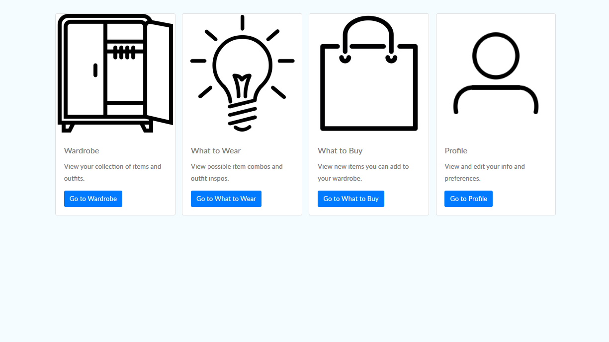

Kevin Mendoza Tudares
Computer Science
Northwestern University
Robert R. McCormick School of Engineering
[full name] 2022 [at] u.northwestern.edu
(512) 632-3680
About
I am a student and researcher at Northwestern University in Evanston, IL as a QuestBridge National College Match Scholar.
I currently live in Austin, TX (technically Round Rock, TX) and for the Summer of 2020 I will be working at RigUp, Inc., a company dedicated to improving efficiency of the energy industry through digitizing workforce operations.
Previously, I was a part of the Array of Things research group at Argonne National Laboratory,
where my research with time-series database solutions and machine learning sensor calibration allowed for more efficient organization and analysis of environmental sensor data.
I am interested in data and systems engineeing, machine learning, and human-computer interaction. I also strive to help people (and in previous work, the environment) through systems and data.
I am currently pursuing a Bachelor of Science in Computer Science from Northwestern University with a minor in Psychology, exploring Northwestern's research areas of
systems,
machine learning, and
human-computer interaction.
I have also been affiliated with the following research groups at Northwestern:
I really enjoy video games (like Minecraft), Java, C#, Python, learning, indie music, traveling, cellos, scripting, exploring, art museums, and teaching.
I have also been an undergraduate teaching assistant for a few courses:
Thanks for visiting! Below are a few projects I have worked on. Feel free to check them out.
Recent Projects

Multicraft
With Marcelo Worsley at TIILT, I developed Gaze and Voice interfaces using Java (Minecraft server), Python (Natural Language Understanding Engine), and C# (Eye Tracking) to facilitate accessible and equitable gameplay in Minecraft.
Both interfaces interact with users' Minecraft Java client through a locally-hosted server.
You can view the current repository here.

Spotimy
As a personal learning project, I developed an application using React to access Spotify's Web API.
The app is designed to allow the user to explore their library of songs and albums, their top artists and songs, and their own playlists to visualize their musical data.
If you have a Spotify account, you can try out the app interface for yourself here.
psiAssistiveAgent
With Jason (Willie) Wilson in Northwestern's Affective Computing course,
I developed a component of an affective agent tasked with training volunteers for emotional support services, such as Northwestern's Wildchat.
The component uses OpenFace to approximate human facial expressions and emotions, and the system is built on Mircosoft's Platform for Situated Intelligence.

DuraCot
As a group in Northwestern's Design Thinking & Communication course, we designed a portable changing table to facilitate diaper changing of a 9-year old with cerebral palsy.
The device allows the caretaker to change their child within the privacy of a handicap stall of most public restrooms.
The design recieved recognition by the Segal Design Institute.

Time Series Analysis of Environmental Data
With Pete Beckman at Argonne National Laboratory, I designed a new PostgreSQL database to manage time-series environmental data maintained by the AoT research group.
I then used the data for developing a sensor calibration model combining supervised and unsupervised machine learning models.
The new model lowered reported temperature error for nodes by about 60%.

SmartCloset
As a group in Northwestern's Human Computer Interaction course,
I developed a simple prototype of a web application designed to assist the user in searching through their wardobe, creating outfits, exploring new styles, and finding new pieces to add to their wardrobe.
You can try out the app interface for yourself here and view the repository here.